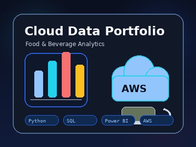

Coffee Ops EDA Analysis
Análisis exploratorio, estadístico e ingeniería de menú para operaciones gastronómicas usando Python, SQL y Excel.
Cloud Data Analytics · AWS · Food & Beverage
Café, nube y datos para decidir mejor.
Portafolio profesional en formato maqueta académica, orientado a análisis de datos, AWS, Python, SQL, Power BI y optimización de operaciones gastronómicas.

Combino datos reales con conocimiento operacional del sector "Food & Beverage" para transformar números en decisiones de negocio concretas. Con formación en Administración Gastronómica y especialización en Cloud Data Analytics, analizo procesos de restaurantes, cafeterías, pastelerías y panaderías utilizando herramientas como Python, SQL, Power BI, Excel y AWS para detectar ineficiencias, optimizar menús y proyectar costos con precisión.
Análisis exploratorio, estadístico e ingeniería de menú para operaciones gastronómicas usando Python, SQL y Excel.
Pipeline ETL para análisis de cafetería utilizando Python, Amazon S3, AWS Glue, Athena y SQL.
Dashboard ejecutivo para visualizar KPIs de ventas, operación y toma de decisiones en cafetería japonesa.
Python (Pandas/NumPy,SciPy/Statsmodels,Matplotlib/Seaborn) · AWS (S3, Glue, Athena) · SQL · Power BI · Excel · HTML5 · CSS3 · JavaScript · Bootstrap 5 · Node.js · GitHub Pages